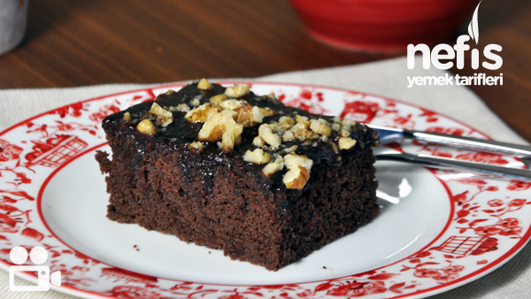

Islak Kek Tarifi

Browni tadında nefis bir ıslak kek tarifi, bir çok ıslak kek tarifinde üzerine dökülen sosta bulunan çiğ yumurta nedeni ile tarifi denemek konusunda sıkıntı yaşayanlara göre güzel bir ıslak kek, beğeneceğinizi düşünüyorum. Yapması oldukça kolay Islak Kek Tarifi nasıl yapılır? yapılışını daha detaylı görmek için videoyu izlemelisiniz. Fotoğraflarınızı bizimle paylaşmayı unutmayın:)
Browni Tadında Islak Kek Tarifi İçin Malzemeler
- 3 yumurta
- 1,5 su bardağı şeker
- 1,5 su bardağı süt
- 1 su bardağı sıvı yağ
- 1 paket kakao (25g)
- 1 paket kabartma tozu
- 1 paket kabartma tozu
- 1 paket vanilya
- 2 su bardağı un (elenmiş)
Üst sosunu hazırlama için
- 1 su bardağı kakaolu karışım (bu karışımı kek hamurunu yaparken ayıracağız)
- 1,5 su bardağı süt
Browni Tadında Islak Kek Tarifi Nasıl Yapılır?
- Islak kek tarifi için ilk olarak yumurta, şeker iyice çırpıldıktan sonra süt, sıvı yağ, kakao eklenerek tekrar çırpılır.
- Kekimizi ıslatmak için bu karışımdan bir su bardağı ayrılır.
- Kalan karışıma kabartma tozu, vanilya ve elenmiş un karıştırılarak kek hamuru oluşturulur
- Yağlanmış tepsiye ya da borcama dökülerek 170 derecede fırına sürülür, yaklaşık 35 dakika pişirilir. Benim kullandığım borcamın ölçüsü 28*22 cm.
- Keki beklerken üzeri için ayırdığınız karışımı uygun bir tavaya alarak üzerine süt ilave edilir ve ocakta 5 dakika kaynatılır.
- Fırından çıkan kekin ilk sıcaklığı çıktıktan sonra yani 10 dk kadar sonra dilimlenir, üzerine yavaş yavaş ılıyan sos her yerine gelecek şekilde dökülür.
- Üzerine iri parçalanan ceviz serpilir..
- Kekin sosu güzelce çekmesi için 2-3 saat dinlendirildikten sonra ıslak kek servis edilebilir.
Islak kek tarifinin püf noktaları;
- Islak kekinizin yumurta kokmaması için yumurtayı şekerle çok iyi çırpmak gerekir, böylelikle hem kekiniz daha iyi kabarır hem de yumurta kokusu olmaz, bu tarifte ayırdığınız sosu kaynatacağınız için kekinizde çiğ yumurta olmayacaktır. Bu tarifi bu sebeple ben severek yapıyorum, ölçüsü tam kıvamında ve oldukça kolay ve pratik bir tariftir. Misafirlerinize çay saatlerinizde ikram edebileceğiniz lezzetli bir kek tarifidir. Deneyenlerin yorum ve fotoğraflarını bekliyorum, kolay ıslak kek tarifi arayanlar, aradığınız tarif burada :)
- Kekinizin güzel bir şekilde kabarması için kullandığınız malzemelerin oda ısısında olmasına ve elenmiş olmasına dikkat etmelisiniz.